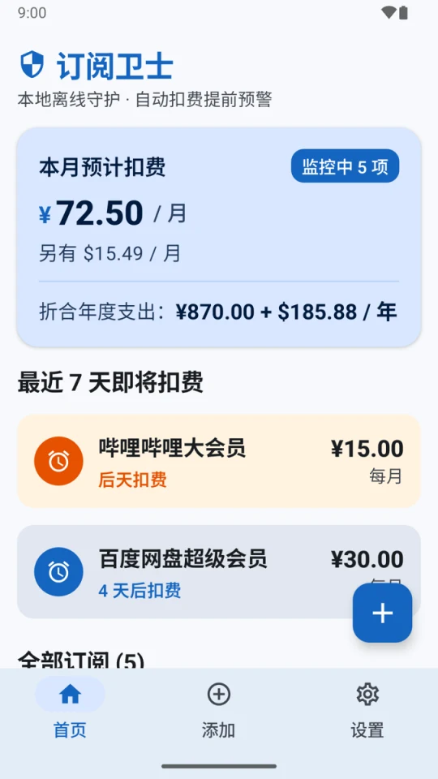
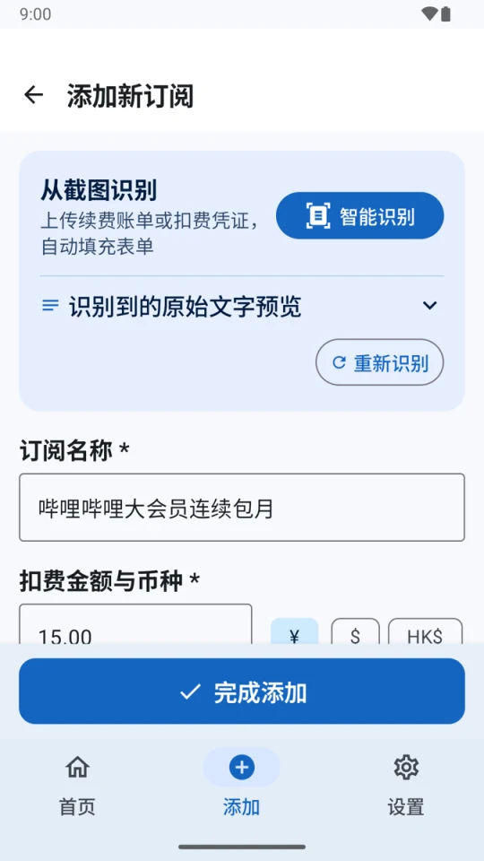
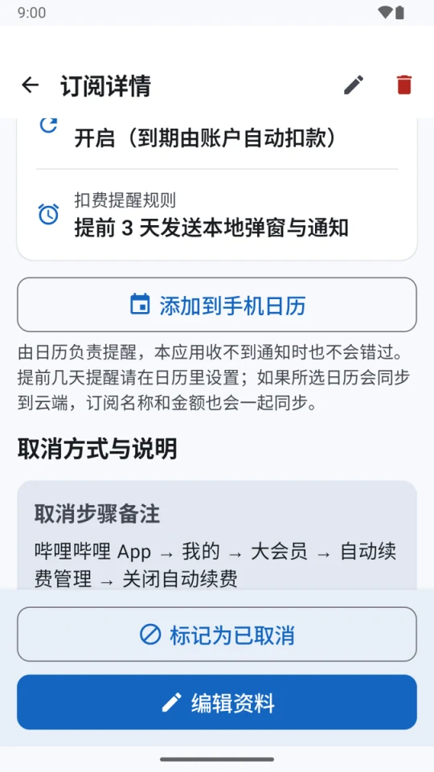
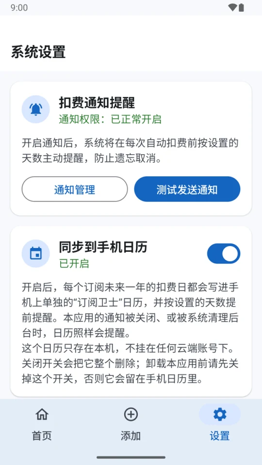

订阅卫士 SubGuard离线的自动续费订阅管理与扣费提醒
订阅卫士是一款开源、完全离线的 Android 自动续费订阅管理应用：记下你开通的会员和订阅，在每次扣费前提醒你，帮你及时取消不想再续费的服务。它不申请网络权限，数据只存在手机上；可以从扣费截图里自动识别订阅信息，也可以把扣费日写进手机日历。界面字号偏大，照顾中老年用户。
Android 7.0 及以上 · 约 11MB · 免费开源（MIT） · 无网络权限 · 界面为中文
截图




功能
记录订阅
名称、金额（人民币 / 美元 / 港币）、每月 / 每季 / 每年、下次扣费日期，还可以记下取消链接和取消步骤。
首页总览
本月和全年预计扣费，按币种分别合计；最近 7 天要扣费的订阅一目了然。
扣费提醒
扣费前 1 / 3 / 7 / 14 天发本地通知，点通知直接进入详情；自动续费的订阅过了扣费日会自动顺延到下一期。
写进手机日历
一键把扣费日加进日历 App；或者打开自动同步，未来一年的扣费日都会写进单独的“订阅卫士”日历，由系统日历按时提醒。
截图识别
从扣费截图里在本地识别名称、金额、周期和日期并自动填表；识别不准时点选候选值即可，已填的内容不会被覆盖。
大字号
正文不小于 16sp，标题不小于 20sp，照顾中老年用户。
适用手机
能用
- Android 7.0 及以上、ARM 处理器的手机：小米 / 红米、OPPO / 一加 / realme、vivo / iQOO、荣耀、三星、Pixel 等
- 没有 Google 服务的手机（国行机型常见）
- 华为 HarmonyOS 4 及以前的版本
不能用
- Android 6.0 及以前的手机
- 华为 HarmonyOS NEXT（HarmonyOS 5 及以后，俗称“纯血鸿蒙”）：不能安装任何 APK
- x86 处理器的设备（主要是电脑上的安卓模拟器）
常见问题
订阅卫士需要联网吗？会不会上传我的数据？
不需要联网，也不会上传。App 没有申请 INTERNET 权限，技术上就连不了网；订阅数据只保存在手机本地数据库里，并且关闭了系统云备份。截图识别用的是打包在安装包里的 Google ML Kit 离线模型，识别过程也在手机上完成。
它能帮我自动取消订阅吗？
不能。订阅卫士只负责记录和提醒，取消需要你到对应的平台操作。每条订阅都可以记下取消链接和取消步骤，收到提醒后照着做就行。
为什么扣费提醒没有准时弹出来？
小米、华为、OPPO、vivo 等系统会限制后台任务，可能让通知推迟或被拦截。建议在系统设置里把订阅卫士的省电策略设为“无限制”并允许自启动（App 设置页有入口）；也可以打开“同步到手机日历”，由系统日历负责提醒。
没有 Google 服务的手机能用吗？
能。截图识别的模型打包在安装包里，不依赖 Google Play 服务。在没有任何 Google 组件的 Android 14 模拟器上测试过，截图识别、扣费通知、写入手机日历都正常。
华为鸿蒙手机能用吗？
HarmonyOS 4 及以前的版本可以安装使用。HarmonyOS NEXT（HarmonyOS 5 及以后）去掉了安卓运行环境，不能安装任何 APK，所以不能使用。
截图识别支持哪些页面？
目前用 Google Play 订阅页的真实截图和构造的微信扣费凭证样例调校过，能识别名称、金额、币种、周期和下次扣费日期。支付宝、App Store 等页面还没有专门验证，识别不准时可以从候选值里点选，或者手动修改。
支持哪些币种？不同币种怎么合计？
支持人民币、美元和港币。App 不联网拿不到汇率，所以不同币种分别合计，不做换算。
同步到手机日历会把数据传到云端吗？
自动同步只写入一个挂在本机账号下的“订阅卫士”日历，它不属于任何云端账号。详情页的“添加到手机日历”则由你在日历 App 里选择存到哪个日历；如果选的是小米账号、Google 账号等会同步到云端的日历，订阅名称和金额也会一起上传。
怎么安装和更新？
从 GitHub 的 Releases 页面下载 APK 安装。App 不联网，不会自己检查更新：可以在 GitHub 上关注本仓库的 Releases（Watch → Custom → Releases），或者用 Obtainium 之类的工具跟踪。新版本直接覆盖安装，数据会保留。
怎么确认下载的安装包没有被篡改？
所有安装包都用同一个签名证书签名，证书的 SHA-256 指纹是 b4f99528a9c2bd045058116a99b7e72bc8dfd11985cc3d74d2bcbaeb4e7ead8d，可以用 Android SDK 里的 apksigner verify --print-certs 命令核对。
订阅卫士免费吗？
免费，并且开源，使用 MIT 许可证。
隐私
- 不申请网络权限，任何数据都不会发出去。
- 数据只存在手机本地，关闭了系统云备份；没有账号，也没有统计。
- 日历权限只在打开“同步到手机日历”时申请，只写入 App 自己建的本机日历。
- 本页面也不加载任何外部资源，没有统计脚本。